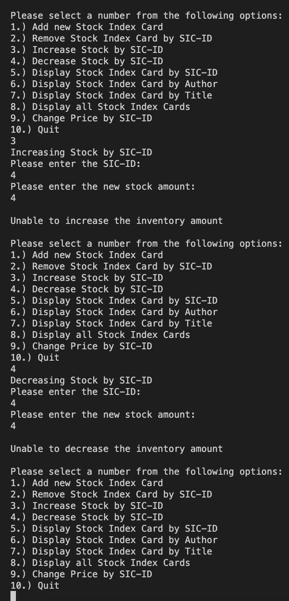
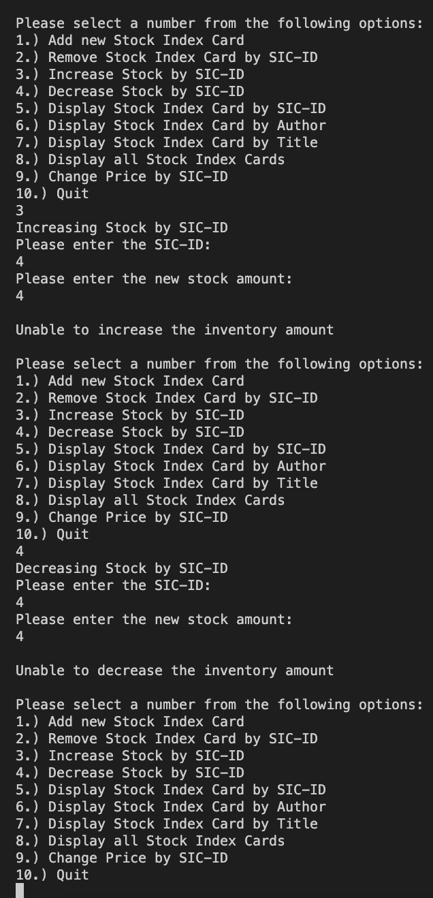

Project Description:
The purpose of this report was to understand why the pipiing plover population has been decreasing in North Dakota for 35 years. My class embarked on a weekend research trip to the JWNP nature preserve in North Dakota to collect data on the earth, water, and plovers in the area. After this trip, we spent the rest of the semester analyzing and interpreting the data we had collected. My team and I studied how precipitation, temperature, and landscape might effect the nests of plovers. Using Excel, ArcGIS, Google Earth, our data, and data going back to 1995, we created graphs and presented our findings to the class.
Relation:
This project is related to my senior capstone in multiple ways. This project required weeks of research on plovers, the enviroment, and the history of the North Dakota area. In our capstone, we must research industry standards and different ways to improve our website. This project also involved strong teamwork skills. I worked with a team to collect data and analyze our findings. The capstone requires collaboration between my group members and the entire class to make an organized system. Finally, this research project challenged me to use software I had never used before. I had never heard of ArcGIS before this project and there was not much guidance from the professor. I had to teach myself through the internet and after I got over the learning curve, I could use it with ease. This required a lot of determination and patience. In our capstone, we are learning a lot of new software. I have never used Heroku before or performed API calls. Using the internet, my team members, and determination, I have been able to learn new things and improve my JavaScript skills.
Examples of Project:


 
